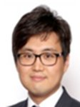
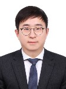
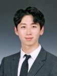
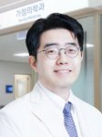
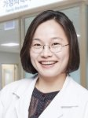
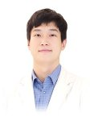
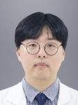

교수진
혈관이식외과
동맥, 정맥, 림프계 질환의 진단과 치료, 혈관접근로, 그리고 신장이식, 췌장이식, 소장이식 같은 장기이식을 맡습니다. 혈관 질환은 수술과 함께 혈관 내 치료를 하고, 혈관초음파로 진단과 시술을 합니다. 1969년 3월 25일 국내 첫 신장이식이 우리 교실에서 이루어졌습니다.
| 병원 | 교수 | 조교수 | 임상교수 | 임상 | 임상진료 | 임상 |
|---|---|---|---|---|---|---|
| 서울성모 |  |   | ||||
| 여의도성모 |  | |||||
| 의정부성모 |  | |||||
| 부천성모 |  | |||||
| 은평성모 |  |   | ||||
| 인천성모 |  | |||||
| 성빈센트 |  |  |
교수진과 임상강사는 2026년 9월 1일 교실원 명단을 바탕으로 정리했습니다. 사진을 누르면 소속 병원 홈페이지의 의료진 소개가 새 창으로 열립니다. 휴대폰에서는 표를 옆으로 밀어 볼 수 있습니다.